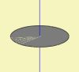
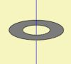
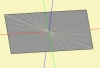
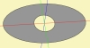
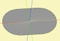
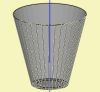
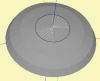
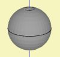

| Identifier | ShellType= | |
| Format | [Disc, Ring, Cone, Rectangle, Ellipse, Oval, Dome, Sphere] | |
| Purpose | Shape of Shell | |
| Used in | Shell | |
ShellType= specifies the shape, which is to be generated by section Shell.
 |
 |
 |
 |
 |
| Disc | Ring | Rectangle | Ellipse | Oval |
 |
|
 |
 |
|
| Cone | Cone | Dome | Sphere |
ShellType=Cone produces an extruded circular shape of depth tD1=. A negative value creates a cone extruding to the front. The base of the cone is located with the help of parameter Position=. The opposite side of the cone has the diameter dD1=.
A cylinder is obtained with dD = |dD1|, with dD= diameter of the base and dD1= diameter of the opposite side. The cylinder is open with dD1 < 0.
ShellType=[Rectangle, Ellipse, Oval] can also be extruded with the help of tD1=. However, the opposite side is always circular.
Normals can be inverted with the help of SwapNormals=true.
By default the shape has a baffle, which can be disabled with the help of HasBaffle=false.